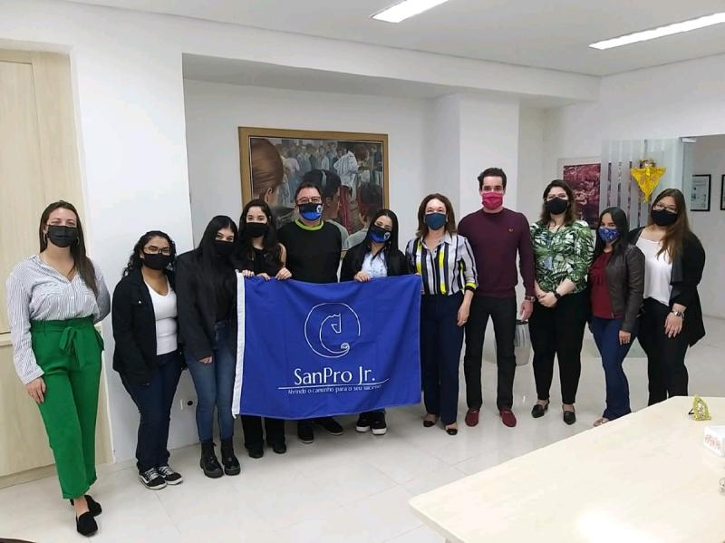
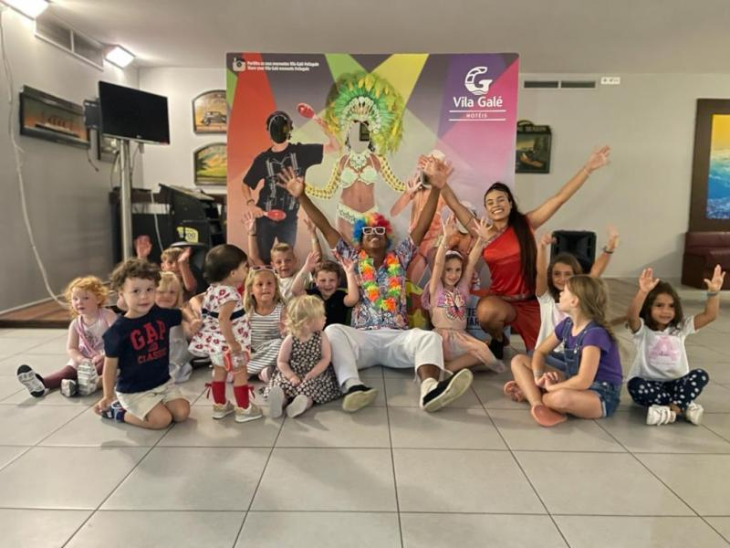
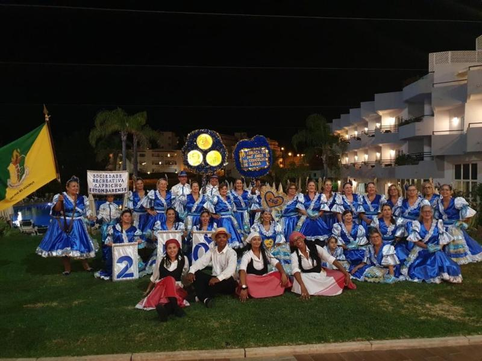
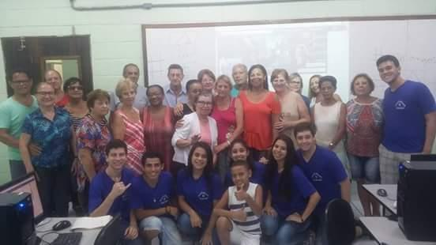

Projetos

Empresa júnior - SanPro Jr.
Diretora de Marketing e Vendas
Realização de toda parte de vendas e marketing da empresa, como:
- Construção Missão, Visão e Valores
- Construção da Carta de Serviços
- Construção do Fluxo de Caixa
- Construção do Processo e Funil de Vendas
- Cadastro no CRM
- Construção do Roteiro de Cold Call;
- Acompanhamento Cultural;
- Mapa Estratégico;
- Acompanhamento das Atividades;
- Acompanhamento Semanal;
- Criação das Mídias Sociais.
Continue Lendo em: Alunas de Engenharia de Produção Unisanta implantam primeira Empresa Júnior de Engenharia da Baixada Santista.


Intercâmbio
Intercâmbio Work Experience em Portugal - 01/05/2023
- 31/10/2023
Conjunto de habilidades relacionadas ao comportamento e à interação humana.
Reúnem as características necessárias que um profissional possua ou desenvolva que não estão diretamente relacionadas com seu trabalho na empresa ou com a posição que ocupam.

Projeto Informática não tem idade.
Instrutora de informática para a terceira idade
Projeto tem como objetivo ensinar noções básicas da Informática para os alunos da melhor idade, acima de 60 anos, afinal, nunca é tarde para aprender